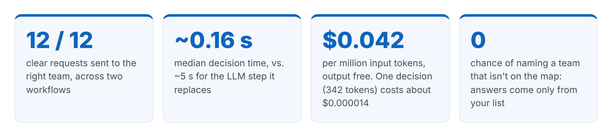
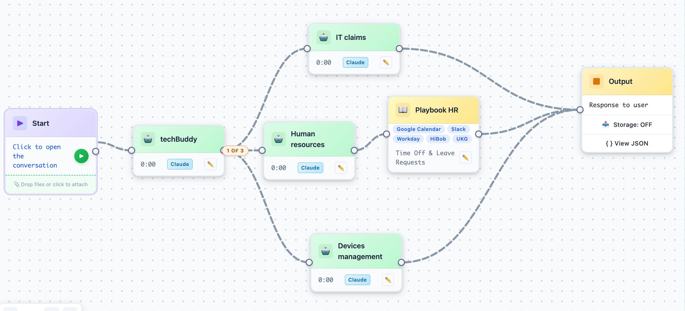
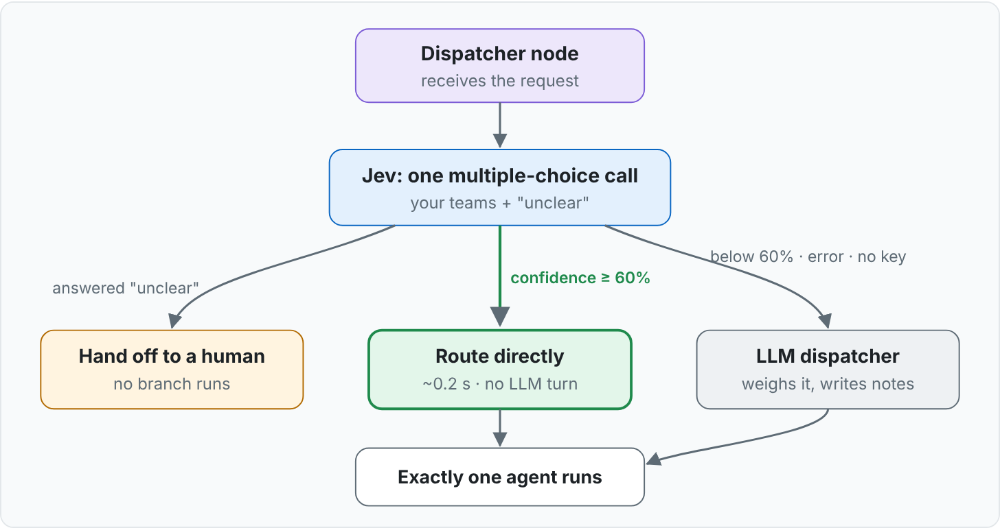
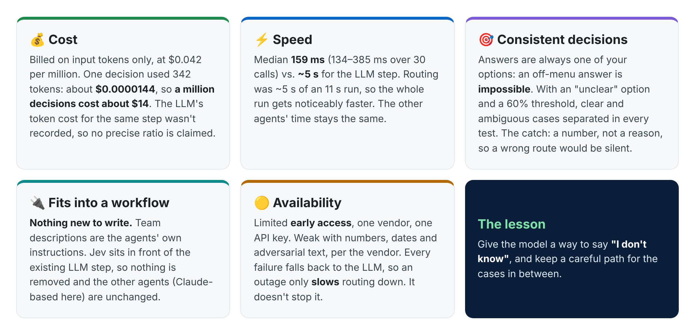

In multi-agent workflows, one step quietly costs time and money every time it runs: deciding which agent should handle the request. We tried a new kind of AI model for that step. It never writes a sentence. It only picks from the options you give it. Here is what we found, including the part that surprised us.

The workflow below was built with the AI Assistant from SynergyAI. It is a typical internal help desk. A request comes in, a "dispatcher" agent called techBuddy reads it, and sends it to exactly one of three teams: IT claims, Human resources or Devices management. The "1 OF 3" badge on the canvas shows that rule: three branches are drawn and only one runs. HR requests continue into an HR playbook connected to Google Calendar, Slack, Workday, HiBob and UKG.

The workflow, designed with SynergyAI's AI Assistant. Every agent here runs on Claude. The experiment replaced only one thing: techBuddy's routing decision.
Think of the dispatcher as a receptionist. Normally a large language model (LLM) does this job. It reads the request, thinks it over in text, and names a team. That works, but it takes about 5 seconds of an 11-second run. Sometimes it also names a team that doesn't exist, so the software needs safety nets to catch those answers.
Jev is a "System One" model from TypeSafe AI, released in limited early access on 15 September 2026. It answers closed questions: which of these options, what level on this scale, or is this true. It returns a probability for each option, and nothing else. It cannot write text, so it cannot invent an answer that is not on your list.
That makes it a natural fit for a dispatcher. The question "which of these three teams owns this request?" is a multiple-choice question.
We sent seven requests to the real help desk dispatcher.
| Request | Jev chose | Confidence |
|---|---|---|
| Two days of vacation next week | Human resources ✔ | 100% |
| Account locked out | IT claims ✔ | 100% |
| Cracked laptop screen | Devices management ✔ | 100% |
| VPN drops every ten minutes | IT claims ✔ | 100% |
| Vacation days left this year | Human resources ✔ | 100% |
| Need a second monitor | Devices management ✔ | 100% |
| Something is wrong, I need help | IT claims ✘ | 100% |
Six out of six were right, at a median of 159 milliseconds. The last request has no clue in it at all, yet Jev sent it to IT with full confidence. A simple "hello" went to IT at 97%.
This is not a bug. It is what the model promises to do. Offered three teams and nothing else, it must pick one of the three. A rule like "only trust answers above X% confidence" would never have caught it.
If the model can only answer with options you supply, then uncertainty has to be one of those options. We added a fourth choice, "unclear", to every question.
| Request | Three teams only | With "unclear" added |
|---|---|---|
| Something is wrong, I need help | IT 99% ✘ | unclear 100% ✔ |
| hello | IT 97% ✘ | unclear 100% ✔ |
| I need access | IT 100% ✘ | unclear 69% / IT 31% |
| Laptop can't reach the VPN | IT 97% ✔ | IT 98% ✔ |
| Leaving, returning my laptop | Devices mgmt 99% ✔ | Devices mgmt 98% ✔ |
| Two days of vacation | HR 100% ✔ | HR 100% ✔ |
Real requests still route with confidence. Empty ones now say so. "I need access" is genuinely ambiguous, and it came back split: 69% unclear, 31% IT. The probabilities only became informative once uncertainty had somewhere to go.
A second workflow chooses between Billing and Sales, which overlap in real life.
| Request | Jev chose | Confidence | Split |
|---|---|---|---|
| Charged twice this month | Billing | 100% | Billing 100% |
| Refund on my subscription | Billing | 100% | Billing 100% |
| Invoice shows the wrong plan | Billing | 97% | Billing 98% |
| How much is the Pro plan | Sales | 99% | Sales 100% |
| A demo before we commit | Sales | 100% | Sales 100% |
| Discount for non-profits | Sales | 97% | Sales 98% |
| Upgrade to the annual plan | Sales | 49% | Sales 66% / Billing 33% |
| Monthly vs annual, and when charged | Billing | 58% | Billing 72% / Sales 16% |
| A question about my account | unclear | 99% | unclear 100% |
| hello | unclear | 100% | unclear 100% |
Every clear request scored 95% or more. Questions like "Upgrade to the annual plan" scored below 60%, split between Sales and Billing. That is the right reading: Sales sells the upgrade, Billing takes the money. Without the "unclear" option, "hello" would have gone to Sales.
So the two kinds of problem are caught by two different signals:
"unclear" means the request names no team. Hand it to a human.
Confidence below 60% means two teams could own it. Let the LLM weigh it.

Jev decides only when it is sure. The LLM keeps the cases that need judgment. "Unclear" requests go to a person. A guess never decides a route.
Every outcome other than a confident answer falls back to the existing LLM path: no API key, a timeout, an error, an unexpected answer. The fast path can make routing cheaper. It cannot make it fail.
| Measure | Jev | LLM routing step |
|---|---|---|
| Time per decision (median) | 159 ms | about 5,000 ms |
| Time range | 134 to 385 ms (30 calls) | not measured |
| Tokens per decision | 342 in, 39 out | a full agent turn |
| Billing | input only, $0.042 per million | input and output |
| Cost per decision | about $0.0000144 | not recorded |
| Can answer outside the list | no | yes, needs safety nets |

Small sample. 30 calls on two workflows with well-named teams. The 60% threshold hasn't been tested on six similar teams or on messy, real-world wording.
No hand-over notes. When the LLM routes, it also writes a short note for the chosen agent. Jev can't. Nothing breaks, but we haven't measured whether answers get worse. That is the next experiment.
Black box. For routes where a wrong branch is expensive, the evidence isn't strong enough yet.
Vendor claims are the vendor's. TypeSafe advertises 40 to 200 times faster than frontier LLMs. We measured about 30 times faster on this step. Independent benchmarks are still scarce.
For a narrow, closed decision like routing a request, a model that can only choose is fast, very cheap and predictable. The key lesson isn't really about speed: give the model a way to say "I don't know", and keep a more careful path for the cases in between. Next we will test whether the same idea works for yes/no checks, like approval gates, in agent workflows.
Are you using small, specialised models for decisions inside your agent workflows? I'd like to hear what has worked for you and what hasn't.
#AIAgents #MultiAgentSystems #WorkflowAutomation #LLM #AIcosts #SynergyAI #Jev
Sources: experiment report "Jev for dispatcher routing: experiments, design, results" (27 September 2026, model jev-1.13.0). Background on Jev: https://www.datacamp.com/blog/system-one-models-jev and https://pasqualepillitteri.it/en/news/16460/typesafe-jev-chatless-ai-beats-claude